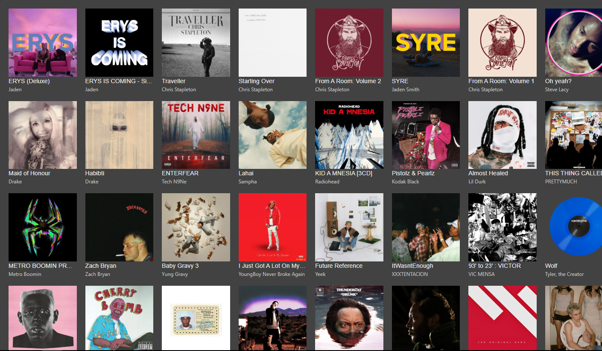

Ubuntu Linux music server
My own streaming service for my music library, running at home.

I configured an Ubuntu Linux server with Docker and a custom domain to host and stream my personal music library. It runs on a repurposed mini PC, and I use it from a browser and from my iPhone.
A Cloudflare Tunnel makes it reachable over HTTPS without opening any ports on my home router.
- Server
- Ubuntu Linux mini PC
- Runs in
- Docker Compose
- Access
- Cloudflare Tunnel and a custom domain
- On the go
- Substreamer on iPhone